Префектура Миэ · Исэ · крафтовое пиво
Пиво Исэ: чайная 1575 года, дрожжи из леса и пивоварня в старом амбаре
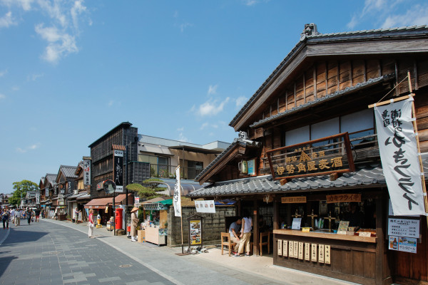
Город Исэ знают по святилищу, к которому японцы идут уже много веков. Но здесь же варят одно из самых титулованных крафтовых пив страны, а в приморском районе Футами двое друзей детства открыли пивоварню, которая работает по календарю огорода.
История
От чайной для паломников к пивоварне
На улице Охараи-мати, где паломники идут к святилищу Исэ, есть место, где можно выпить только что сваренного крафтового пива. Это Ise Kadoya. Начиналось всё в 1575 году с чайной, где поили чаем путников, шедших на поклонение. В 1923 году семья занялась мисо и соевым соусом, а в 1997 году начала варить пиво.
Корни дома уходят в эпоху Сэнгоку, время междоусобных войн XV–XVI веков. Чайная стояла у пристани на реке Сэта, куда причаливали лодки с паломниками, и называлась «Никэн-тяя моти Кадоя хонтэн». Переломным стал 1923 год: глава восемнадцатого поколения рядом с чайной открыл производство мисо и соевого соуса. Со временем «соевый соус Кадоя» стал привычным на столах всей округи, а вместе с ним в семейных амбарах из поколения в поколение передавалось умение обращаться с брожением.
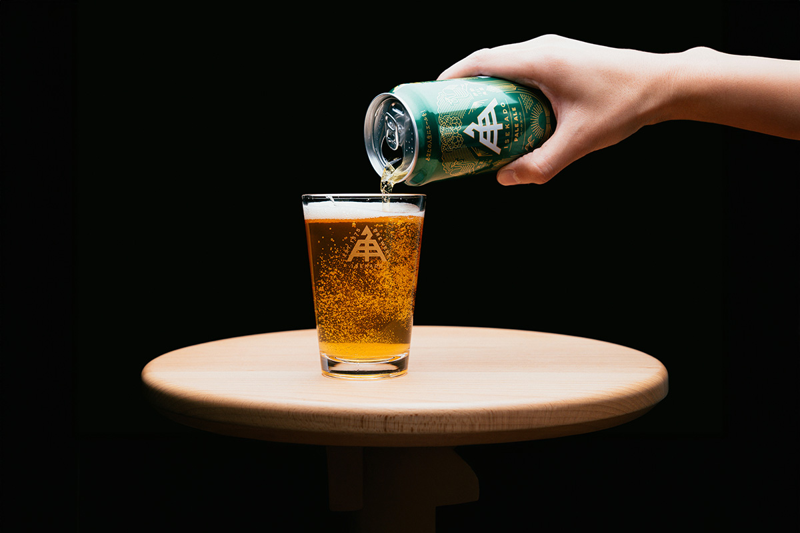
Отсюда и двойная жизнь логотипа. Знак с иероглифом «кадо», «угол», в Токио и окрестностях связывают с крафтовым пивом ISEKADO, а в самом Исэ он напоминает о бутылке соевого соуса. Нынешний глава дома, Нарихиро Судзуки, представитель двадцать первого поколения, в детстве играл в бродильных амбарах. Именно отсюда, по его словам, и выросло будущее пиво.
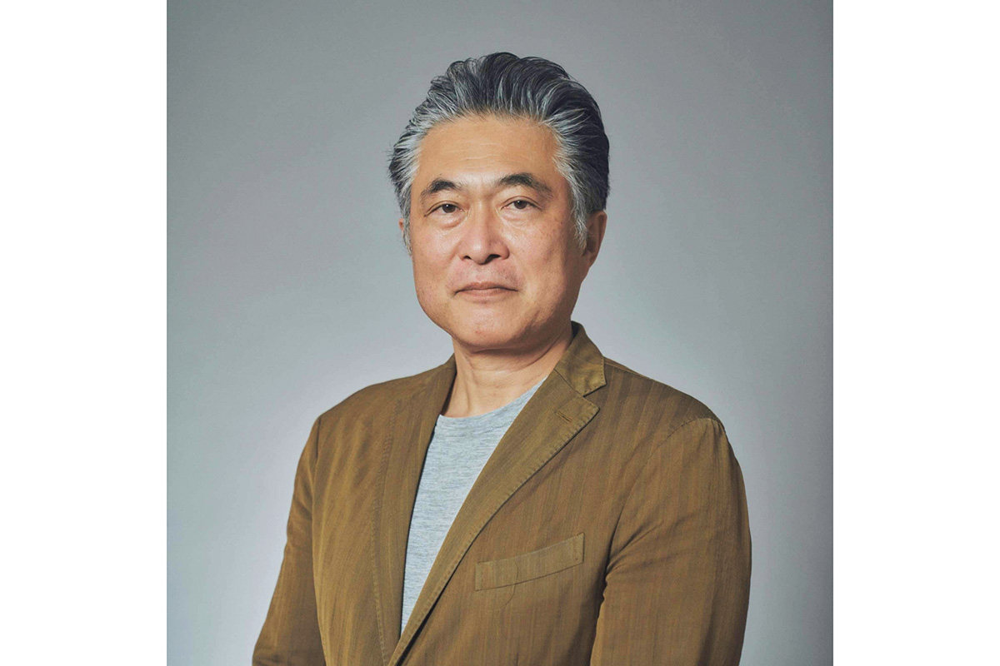
Наука
Пиво как наука о брожении
В университете Судзуки с головой ушёл в изучение микроорганизмов, и когда в 1994 году в Японии смягчили закон о налоге на алкоголь, он начал варить местное пиво. Сначала это было побочное дело: хотелось чем-то разбавить скучные будни. Несколько лет на пиво почти никто не обращал внимания. Перелом случился на зарубежном конкурсе: там Судзуки понял, что пивоварение это прежде всего наука. Он вернулся в аудиторию, поступил в магистратуру и защитил диссертацию по диким дрожжам.
Уже в 2000 году пиво Ise Kadoya взяло золото на конкурсе Japan Beer Cup, а со временем пивоварня стала обладательницей наибольшего числа наград на международных конкурсах среди японских пивоварен.
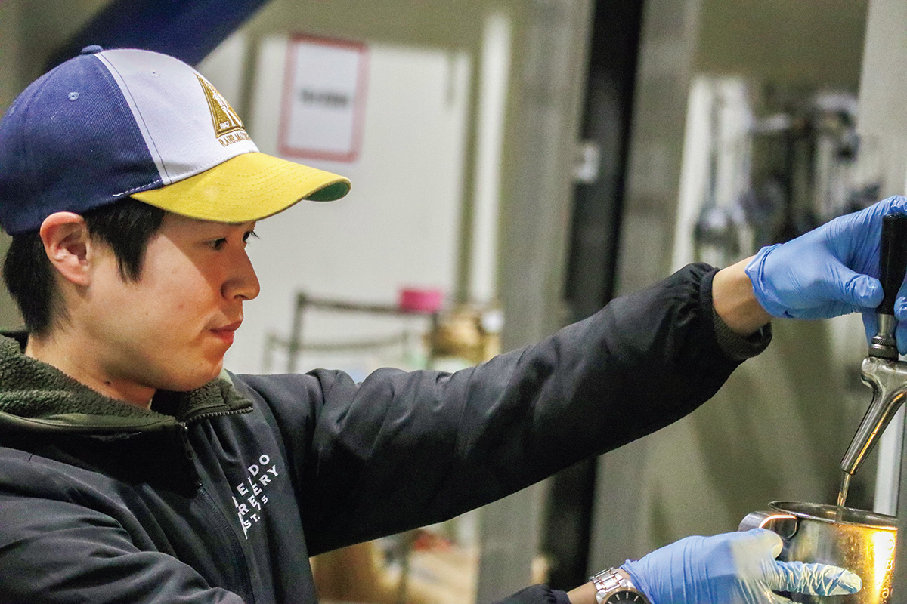
Пивоварня перезапустилась как исследовательская: закупила новейшие анализаторы и сделала ставку на собственные дрожжи. Единственный сорт, который варят без перерыва с самого основания, это PALE ALE, образцово сбалансированный эль, ориентир для всего остального. Поставив его в центр линейки, пивоварня смогла позволить себе смелые эксперименты. Среди них HIME WHITE, сваренный на диких дрожжах, которые глава компании сам собрал в лесах Исэ.
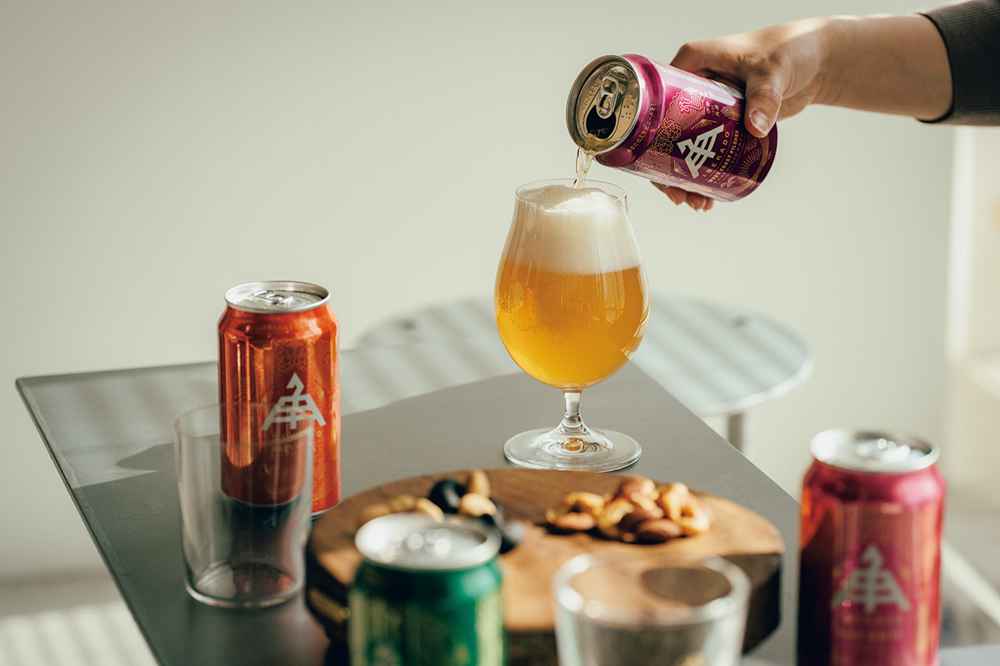
Постоянных сортов у крафтовых пивоварен обычно немного: чтобы каждая партия получалась одинаковой, нужна очень высокая техника. ISEKADO унаследовала культуру американского крафта, но благодаря исследованиям держит стабильное качество и выпускает пиво большими объёмами. За этим стоит простая цель: продавать крафтовое пиво по доступной цене, чтобы оно было не хобби для знатоков, а привычной радостью для всех.
Дрожжи
Пиво на цветочных дрожжах
Кроме постоянных сортов Ise Kadoya варит много ограниченных: к праздникам, событиям и на заданную тему. Одна из таких затей это серия «Ханакин» на цветочных дрожжах. Эти дрожжи выделила из японских цветов лаборатория алкогольных напитков колледжа Токийского сельскохозяйственного университета, а в августе 2015 года Ise Kadoya первой среди пивоварен выпустила на них пиво.
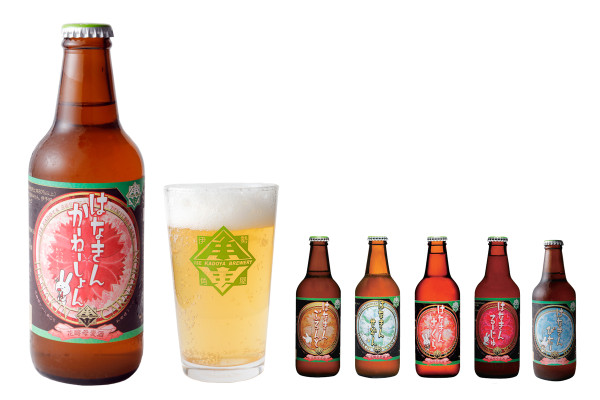
Весной это дрожжи сакуры, и пиво получается освежающим, как фруктовый сок. Ко Дню матери, в подарок, варили пиво на дрожжах гвоздики: с мягкой кислинкой и фруктовым ароматом. Были и сорта на дрожжах цветков мандарина, плетистой розы и катарантуса, и для каждого рецепт придумывали под характер дрожжей.
Серию ведёт пивовар, которая изучала цветочные дрожжи на кафедре бродильных производств Токийского сельскохозяйственного университета. Для неё в компании устроили собственную дрожжевую лабораторию, редкость для крафтовой пивоварни, и все исследования дрожжей лежат на ней.
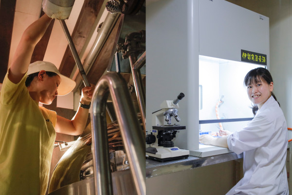
Ароматное и лёгкое пиво «Ханакин» особенно полюбили женщины. «Это время для меня счастье», говорит она о работе с дрожжами. При этом в лаборатории она не прячется и берётся за тяжёлую работу при варке.
«Да, тяжело. Но всё равно весело»
пивовар Ise Kadoya
Линейка
Пять банок ISEKADO
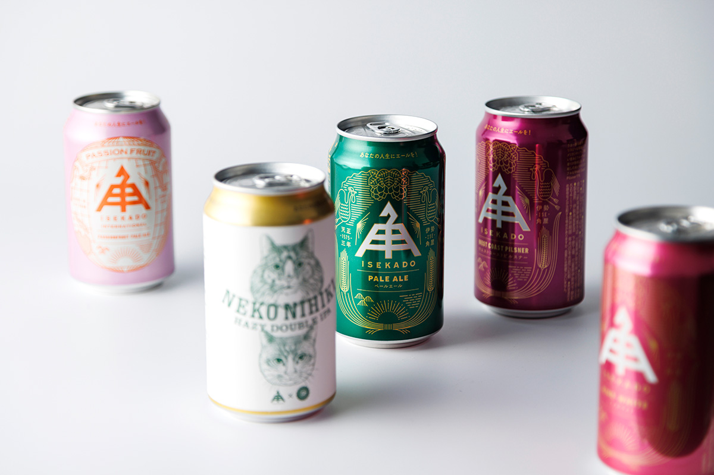
HIME WHITE это пиво в бельгийском стиле витбир на диких дрожжах, с цедрой юдзу и кориандром. Подходит к любой еде. WEST COAST PILSNER это пилснер нового поколения с ярким хмелевым ароматом и чистым финишем, он пьётся легко. PALE ALE, американский пейл-эль и флагман пивоварни, варят с первого дня. Послевкусие у него свежее, поэтому он хорош с жареным во фритюре и с тушёными блюдами.
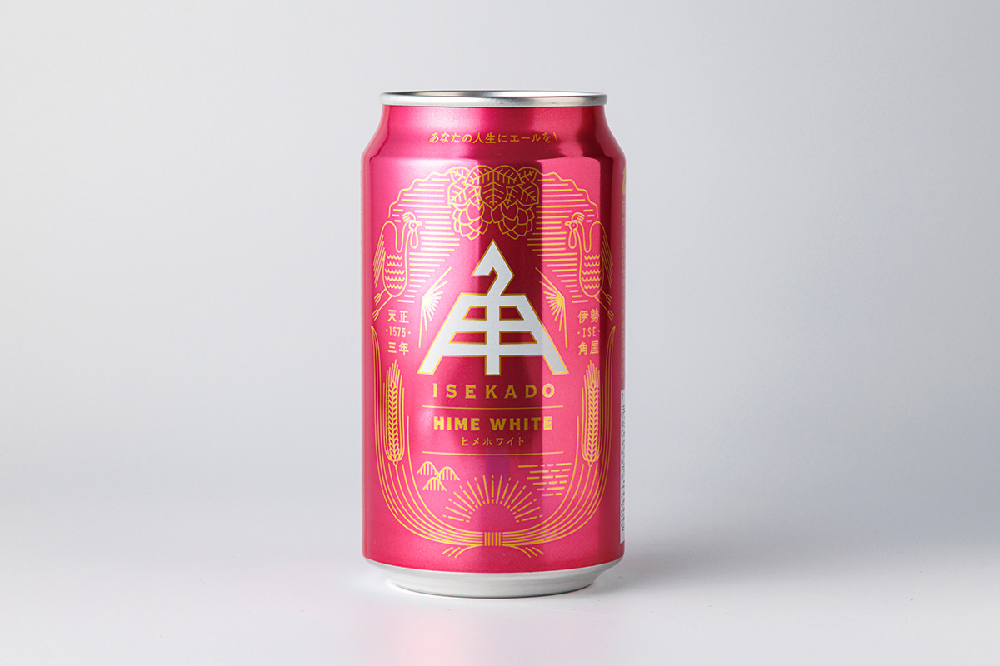
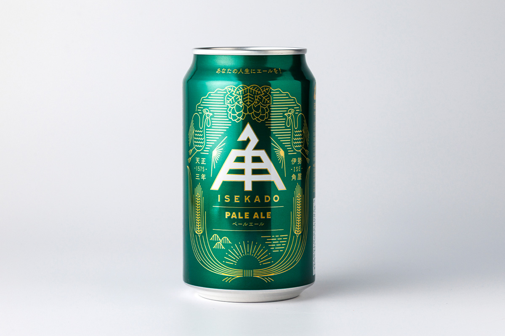
NEKO NIHIKI, по словам пивоварни, первый в Японии мутный IPA. Это двойной IPA крепостью 8%, с резким ароматом, будто откусил тропический фрукт. PASSION FRUIT PALE ALE варят на свежей маракуйе, которую выращивают рядом с заводом компании во Вьетнаме. Его советуют пить у бассейна.
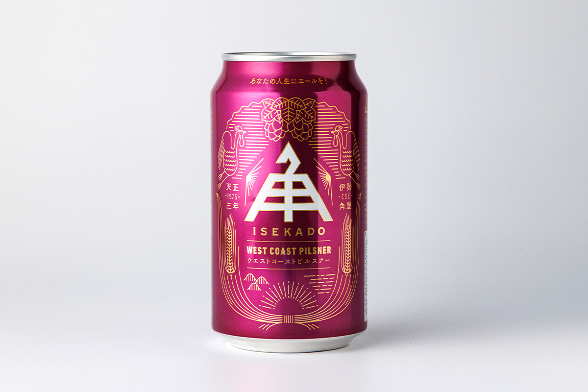
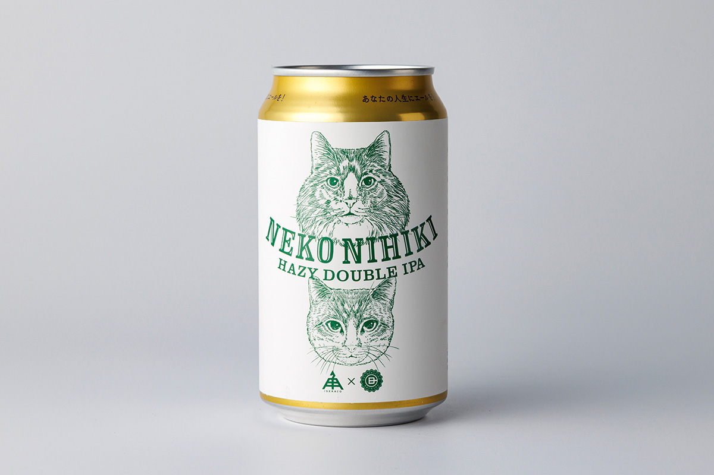
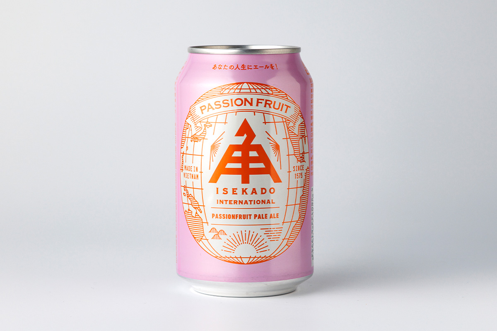
Ise Kadoya, магазин у Внутреннего святилища
- Адрес
- префектура Миэ, Исэ, Удзи-Имадзайкэ-тё, Хигаси-Гасюраку, 34
- Как добраться
- от станции Удзиямада автобусом до остановки «Найку-маэ» около 20 минут, затем пешком 5 минут
Футами
«Химицу бир»: мечта двух школьных друзей
«Когда-нибудь мы вдвоём откроем пивоварню». Эту мечту студенческих лет двое друзей воплотили в микропивоварне «Химицу бир», что значит «секретное пиво». Она появилась в 2021 году в районе Футами, где с древности выпаривают священную соль для святилища Исэ. Варят здесь медленно, прислушиваясь к дрожжам, а в качестве добавок берут то, что созрело в поле. Свою цель пивовары называют просто: сделать место, где людям хорошо.
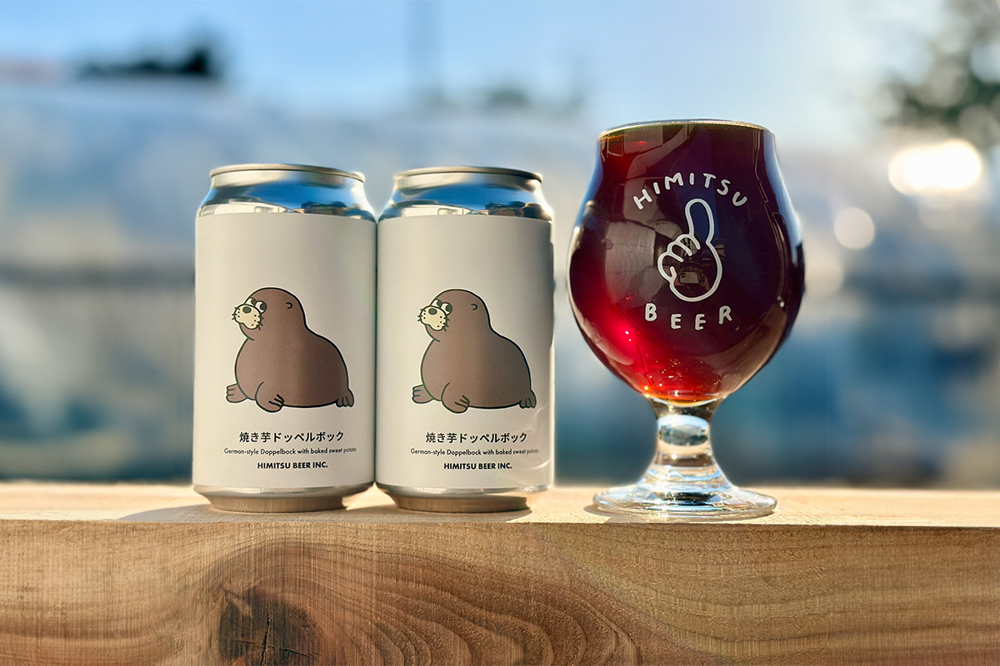
«Мы просто очень любим поесть и выпить», говорит глава пивоварни Кэйта Ябуки. Работать по найму он себя не представлял никогда. С другом, с которым они вместе учились в школе и в университете, они не раз договаривались: однажды откроем свою пивоварню.
Жизнь сначала развела их далеко от пива. Друг после магистратуры пошёл исследователем в сакэ-компанию Nihonsakari, а Ябуки продавал рекламу. Как раз тогда первое японское местное пиво ушло в процедуру банкротства, и пивоварен, где им хотелось бы работать, в стране просто не было.
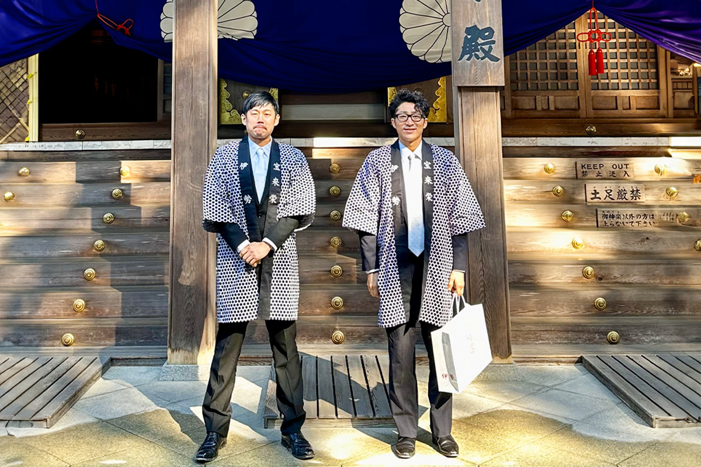
Однажды друг услышал, что за границей есть любопытная штука под названием крафтовое пиво. Они поехали в Осаку и впервые в жизни попробовали IPA. Этот момент всё решил.
«Вот оно, вот оно! Мы поняли, что пора срочно создавать ту самую компанию, о которой говорили в юности»
Кэйта Ябуки
Путь
Пятнадцать лет до своей пивоварни
Обоим было под тридцать. Сначала нужно было получить лицензию на производство алкоголя, но мест для ученичества не находилось. Тогда Ябуки устроился подрабатывать в Shiga Kogen Beer, лишь бы попасть в отрасль, а потом набирался опыта в Minami Shinshu Beer и Yorocco Beer.
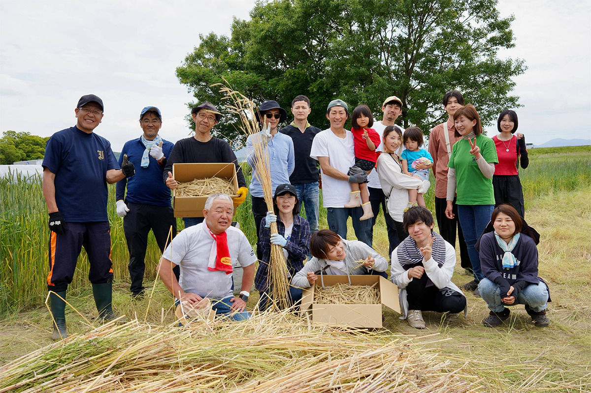
Друг тем временем строил карьеру исследователя, но, видя, что Ябуки уже в пивном деле, заволновался и стал искать новую работу. Совпало удачно: в Ise Kadoya как раз уходил специалист по контролю качества, и его взяли.
В 2021 году, набравшись опыта на разных пивоварнях, друзья взялись за собственное дело. Место выбрали в Футами, на родине Ябуки: здесь можно и работать в поле, и варить пиво, а стартовые расходы невелики. Пивоварню устроили в перестроенном сельском амбаре, которым пользовался дед Ябуки. Когда она открылась, бывшим студентам было по 34 года.
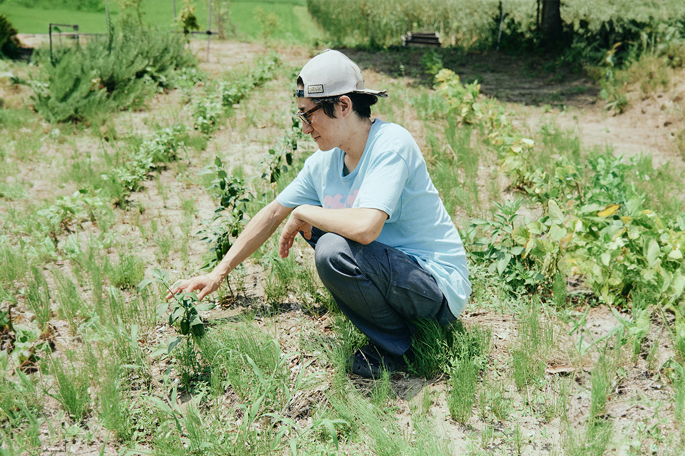
«Люди вроде нас, которые хотят своё дело, для общества белые вороны. Но если перевести это на язык земледелия, мы просто интересный урожай, выращенный без химии, не по шаблону»
Кэйта Ябуки
В основе «Химицу бир» эта свободная, почти фермерская философия. И ещё один лозунг: создать место для тех, кто, как и они сами, не вписывается в общий строй.
Брожение
Слушать дрожжи
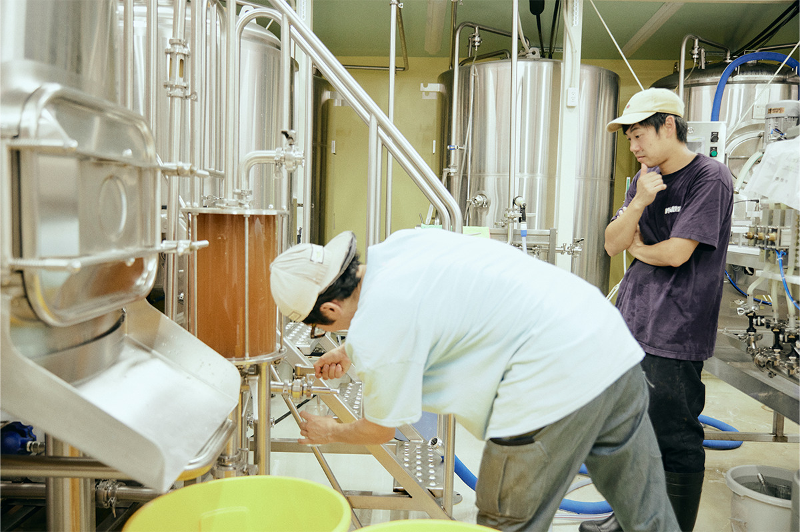
«У нас люди подстраиваются под дрожжи, поэтому мы никогда не знаем точно, когда пиво будет готово. Наши дрожжи неторопливые, брожение долгое, но именно эта тихая работа дрожжей даёт яркий, многослойный вкус»
Кэйта Ябуки
Пивоваров всего двое, и за одну варку в неделю выходит не больше 3000 банок. Работа тяжёлая, признаётся Ябуки, поэтому он хотел бы, чтобы об этом пиве рассказывали только самым близким людям, а дальше оно расходилось по цепочке знакомств.
До открытия пивоварни Ябуки почти не бывал дома, но теперь в каждом сорте чувствуется уважение к родным местам. SKYLINE свеж, как поездка по горной дороге Исэ-Сима Скайлайн. «Уми-но киоку», «Память моря», сварено с местной солью «Ивато-но сио» из Футами, и соли ровно столько, сколько нужно.
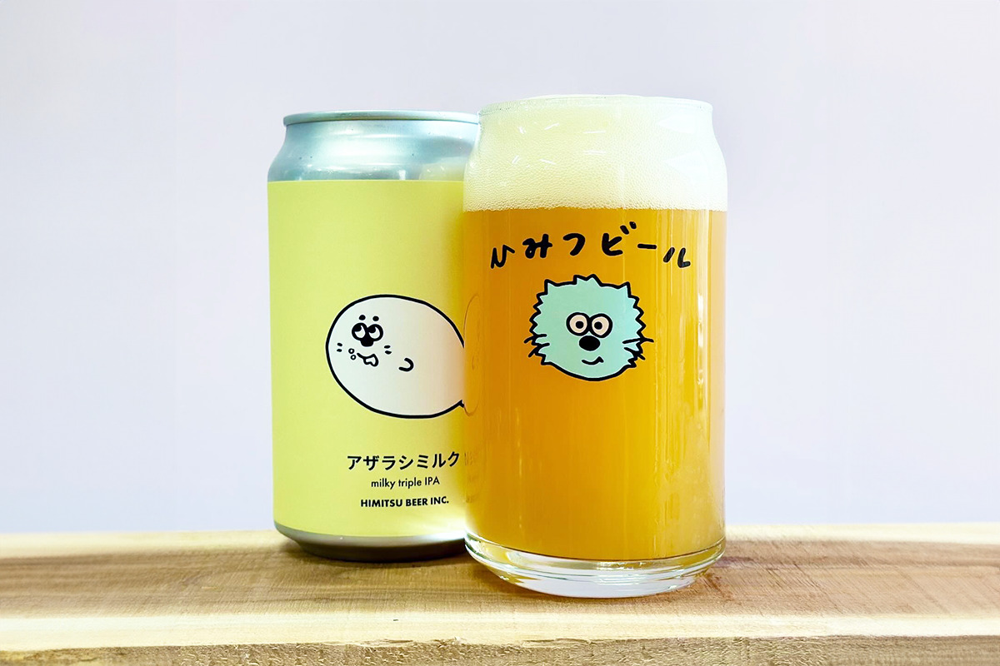
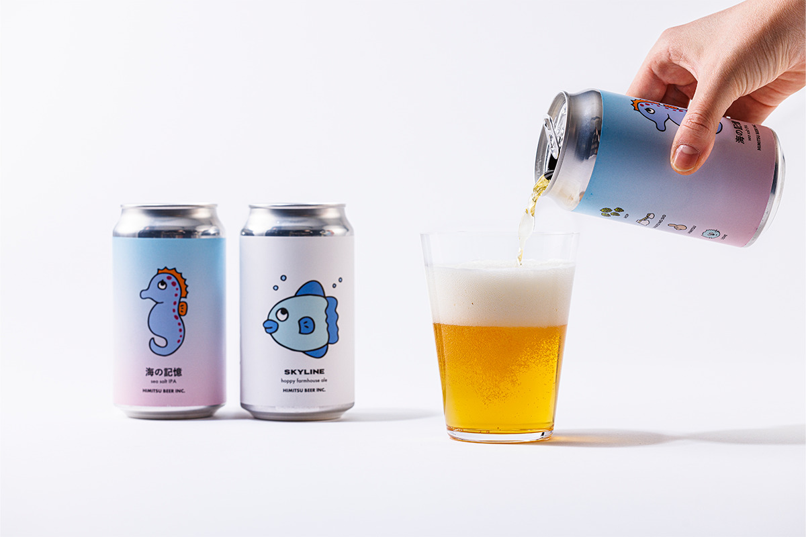
«Прямо за пивоварней море. В детстве, когда купался, на ноге запутывались морские коньки. Из таких воспоминаний и рождаются рисунки для этикеток»
Кэйта Ябуки
Добавками служат то, что растёт на полях рядом с пивоварней: ячмень и пшеница, рис, фрукты, травы.
«Нас спрашивают, какой сорт постоянный. Если смотреть на весь год, постоянные все. Мы варим по сельскому календарю: в одно время морковь, в другое цитрусы. Урожай и варка идут вместе»
Кэйта Ябуки
Так «Химицу бир» оказывается ещё и пивом, по которому можно узнать время года.
«Химицу бир»
- Адрес
- префектура Миэ, Исэ, Футами-тё
Фото: Юко Окосо.